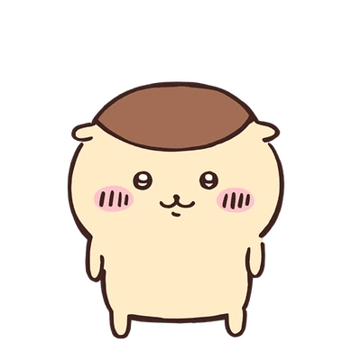

Kurimanju
En Kurimanju té una certa afició per les begudes... les fortes. Equipat amb llicència per beure alcohol, sovint es veu en Kurimanju amb aperitius i begudes a la mà i és conegut per fer un gran sospir després d'acabar l'últim glop. Tot i que és tranquil per naturalesa, en Kurimanju és amable i es pot trobar compartint menjar amb en Chiikawa i els seus amics.
Tranquil
Amable
Golafre